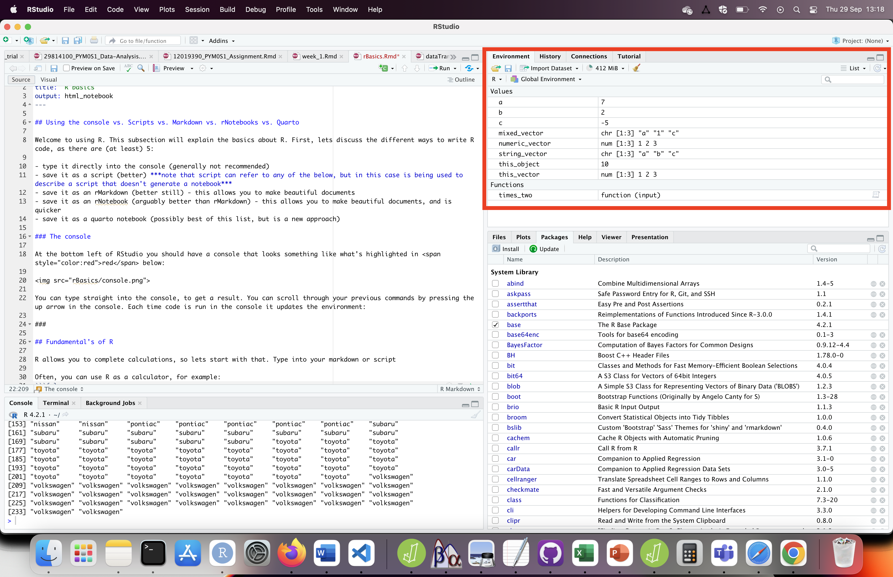
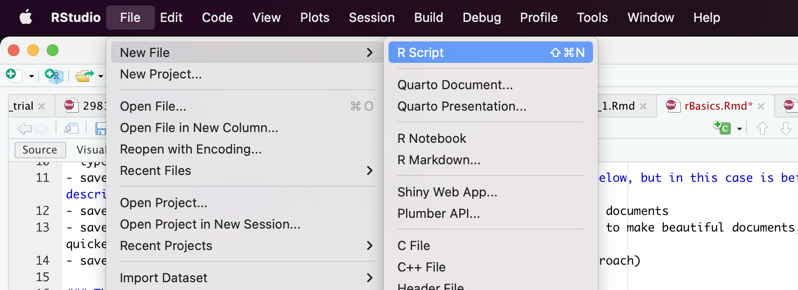
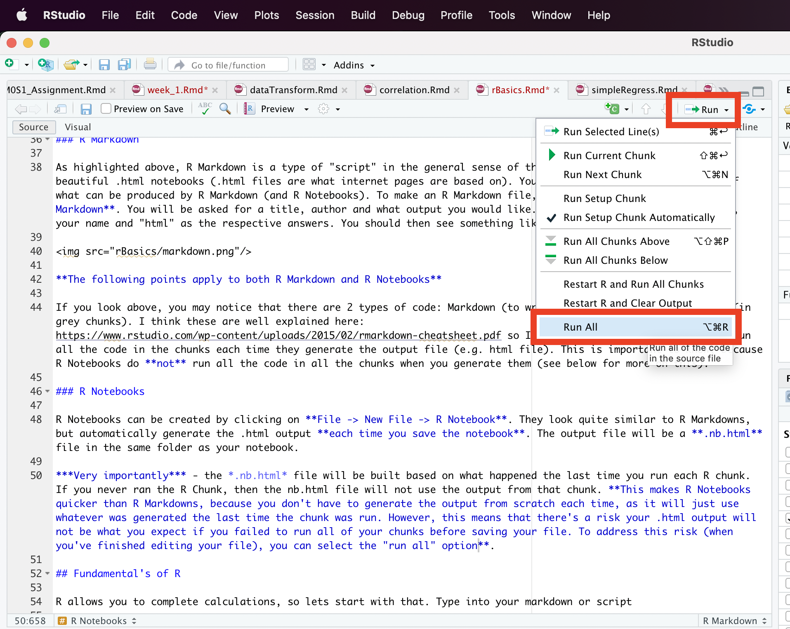

Types of Scripts
Welcome to using R. This subsection will explain the basics about R. First, lets discuss the different ways to write R code, as there are (at least) 5:
- type it directly into the console (generally not recommended)
- save it as a script (better) note that script can refer to any of the below, but in this case is being used to describe a script that doesn’t generate a notebook
- save it as an R Markdown (better still) - this allows you to make beautiful documents
- save it as an R Notebook (arguably better than R Markdown) - this allows you to make beautiful documents, and is quicker
The Console
At the bottom left of RStudio you should have a console that looks something like what’s highlighted in red below:

You can type straight into the console, to get a result. You can scroll through your previous commands by pressing the up arrow in the console. Each time code is run in the console it updates the environment in the top right of R-Studio:

Scripts
The word “script” can be interpreted specifically, to refer to a type of R file that includes a lot of code, or generally to refer to any file that includes both R code and code that allows you make a nice looking report. In this subsection, we will be focusing on “script” as a particular type of file. To create a script, click on File -> New File -> R Script

You will then be shown a blank script, in which you can write a series of functions, and then run them. To run the lines of code, select a line, and then press CTRL-ENTER, or highlight a chunk of code and then press CTRL-ENTER. In either case, the code will be sent to the console and run there.
An advantage of a script over just using the console is that you can analyse your data in both structured and complex ways which is difficult if you are typing code directly into the console.
R Markdown
As highlighted above, R Markdown is a type of “script” in the general sense of the word, but allows you to create beautiful .html notebooks (.html files are what internet pages are based on). You are in fact reading an example of what can be produced by R Markdown (and R Notebooks). To make an R Markdown file, click on File -> New File -> R Markdown. You will be asked for a title, author and what output you would like. I would suggest “first markdown”, your name and “html” as the respective answers. You should then see something like:

The following points apply to both R Markdown and R Notebooks
If you look above, you may notice that there are 2 types of code: Markdown (to write a nice looking report) and R (in grey chunks). I think these are well explained here: https://www.rstudio.com/wp-content/uploads/2015/02/rmarkdown-cheatsheet.pdf so I’ll just explain that R Markdowns run all the code in the chunks each time they generate the output file (e.g. html file). This is important to know, because R Notebooks do not run all the code in all the chunks when you generate them (see below for more on this).
R Notebooks
R Notebooks can be created by clicking on File -> New File -> R Notebook. They look quite similar to R Markdowns, but automatically generate the .html output each time you save the notebook. The output file will be a .nb.html file in the same folder as your notebook.
Very importantly - the .nb.html file will be built based on what happened the last time you run each R chunk. If you never ran the R Chunk, then the nb.html file will not use the output from that chunk. This makes R Notebooks quicker than R Markdowns, because you don’t have to generate the output from scratch each time, as it will just use whatever was generated the last time the chunk was run. However, this means that there’s a risk your .html output will not be what you expect if you failed to run all of your chunks before saving your file. To address this risk (when you’ve finished editing your file), you can select the “run all” option.
